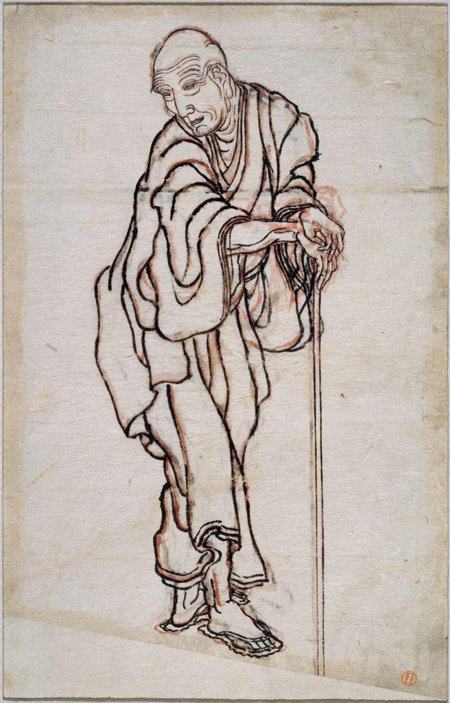

This is Hokusai again, but not a still life. It is the master drawing himself as an old man, and it is almost pure composition. Notice how much of the page he leaves empty, and where he chooses to place the single figure.

The figure is not centered. He leans on his stick and tilts forward into the open space, and the plain diagonal of the ground tips the whole picture slightly off balance. All that emptiness is a composition choice: it makes the small, stooped figure feel alone and, at the same time, dignified. Hokusai arranged the frame so the space itself carries feeling.
Composition is not one style. Compare a modern American painter who arranged stillness and space with a French photographer who arranged the same thing in a fraction of a second.
Hopper painted quiet American scenes: diners at night, sunlit rooms, empty streets. His subject was often loneliness, and he built that feeling through composition. He placed figures off to one side, left large blank walls and windows, and used strong horizontal and diagonal lines to lead the eye across empty space. The arrangement, more than the subject, is what makes a Hopper feel the way it does.

Everything Hopper is known for is already here, twenty years before his most famous paintings. The woman is pushed left and low, well off center. The largest single shape in the picture is not her; it is the tall empty window on the right. The blank wall gets more room than the figure does. Hopper could have moved her to the middle and filled that wall, and the picture would have become an ordinary scene of someone sewing. Instead he gave most of the frame to nothing, and the emptiness is what you feel.
Hopper's later paintings are still under copyright, so we view those at the source rather than reproduce them here. Open Nighthawks and notice the same habit at a larger scale: the long diagonal of the diner counter leads your eye straight to the small group of figures, while the huge dark empty street fills most of the frame and makes the lit interior feel isolated. Then look at People in the Sun for the off-center row of figures and the enormous blank landscape they face.
Edward Hopper, Nighthawks, at the Art Institute of ChicagoEdward Hopper, People in the Sun, at the Smithsonian American Art Museum
Cartier-Bresson was a photographer who composed on the street in an instant. He is famous for the idea of the decisive moment: the single split second when the people and shapes in a scene line up into a perfect arrangement. He did not move his subjects; he waited and framed. His photographs show that composition is not only slow arrangement, it can be split-second recognition of an arrangement that is already happening.
His photographs are under copyright, so we view them at the source. Look for how a figure, a line, and a background element snap into balance for one frame. Notice how leading lines (a railing, a puddle, a stair) point to the moment he waited for.
Henri Cartier-Bresson at the Museum of Modern ArtThe Fondation Henri Cartier-Bresson collection
Artists and critics read a work in a deliberate order so that judgment is earned, not blurted: describe, analyze, interpret, judge. The rule is simple: you may not skip ahead. Describe before you analyze; analyze before you interpret; interpret before you judge. Here is that order applied to Hopper's Nighthawks, which you opened above.
D · Describe (just the facts)
A brightly lit corner diner at night. Three customers and a server are inside; the street outside is dark and completely empty. The long glass wall of the diner runs on a diagonal across the frame.
A · Analyze (how is it built?)
The diagonal counter is a strong leading line that pulls the eye toward the cluster of figures, the focal point. The figures sit off to one side, not centered, and a large area of dark, empty street balances them across the frame. The light interior against the dark exterior creates high contrast right at the focal point.
I · Interpret (what is it saying?)
The arrangement makes the people feel enclosed and alone even though they are together. The empty street and off-center placement turn a simple diner into an image of isolation in a big city.
J · Judge (does it succeed?)
It succeeds completely. The feeling of loneliness comes almost entirely from composition, the empty space, the diagonal, the off-center figures, which is exactly why the painting is so memorable.
▶ In your notebook, write one Analyze sentence about Hokusai's self-portrait above before you open this. Then compare.
Hopper planned his arrangements for weeks; Cartier-Bresson caught his in a heartbeat. Different methods, one habit: they treated placement and empty space as the message, not the background. This four-step order is how you slow down and read those choices in any work, including your own.